1° parcial, 24/06/2023
1° parcial, 24/06/2023
Enunciado

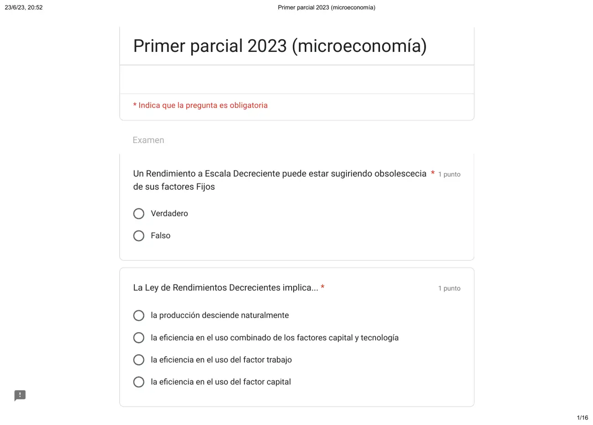

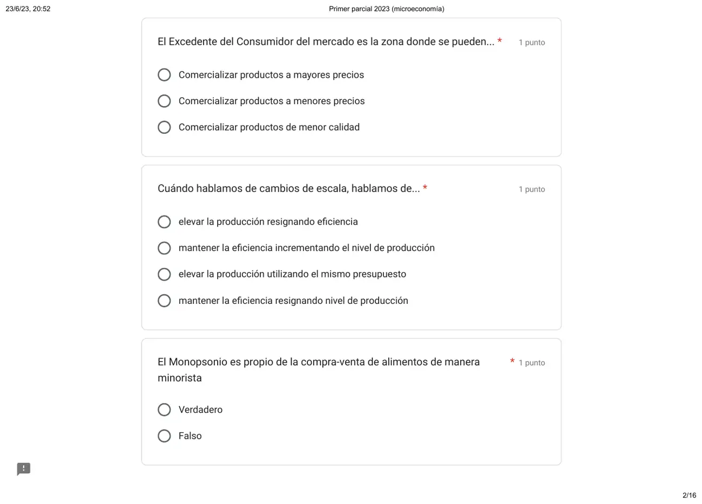

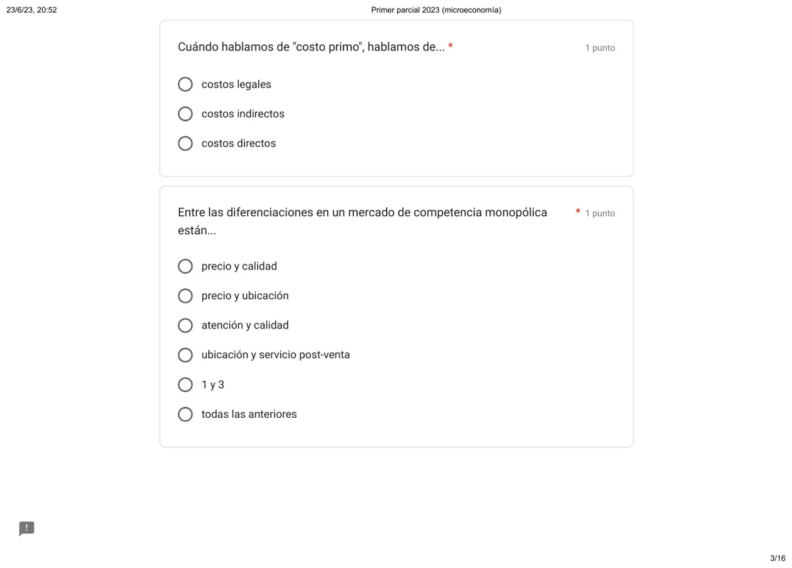

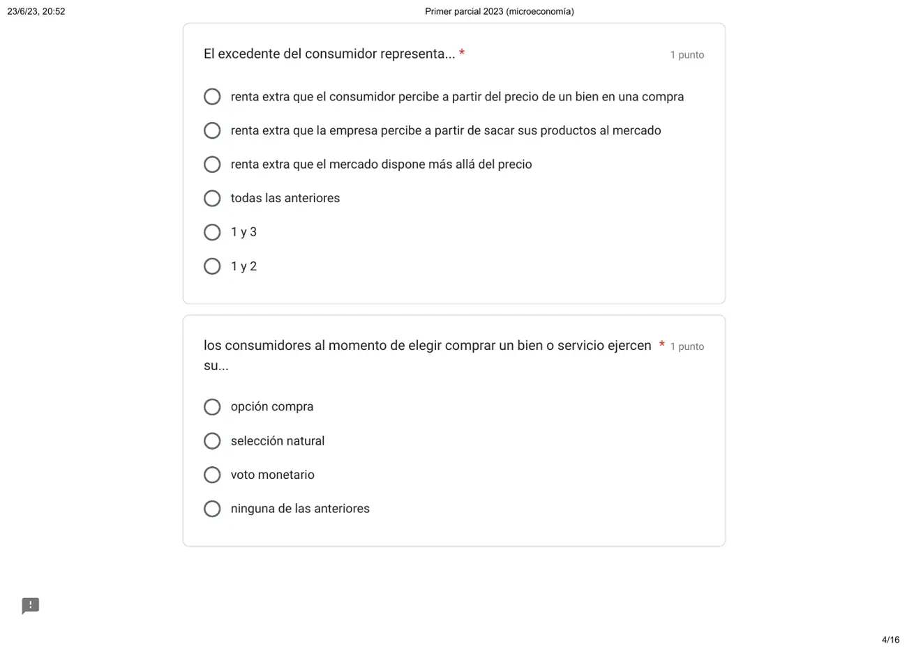

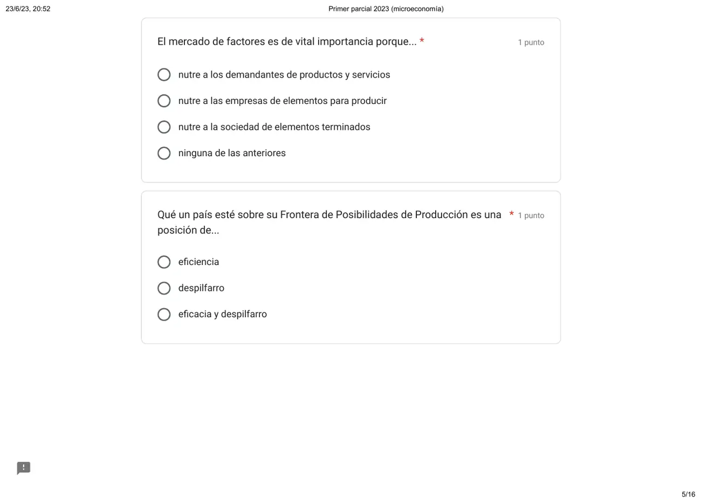

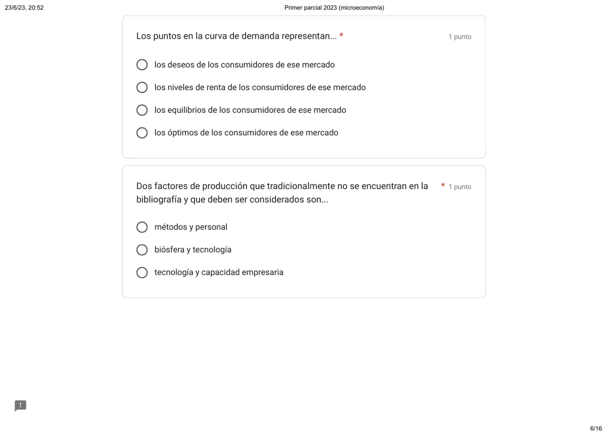

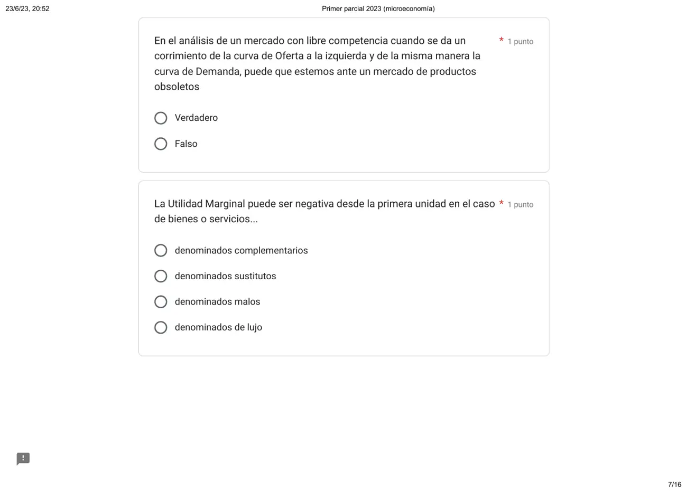

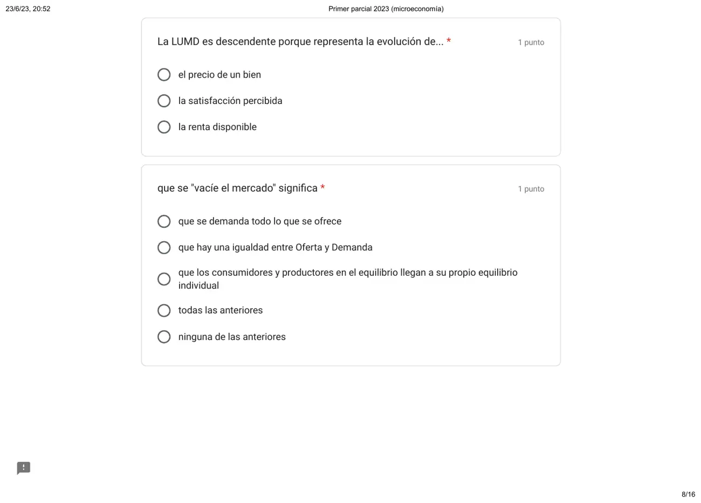

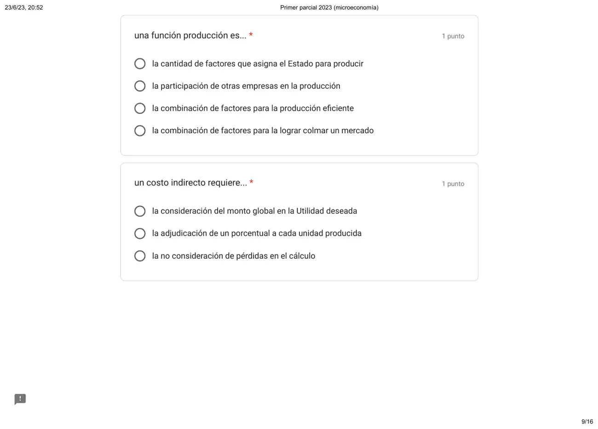

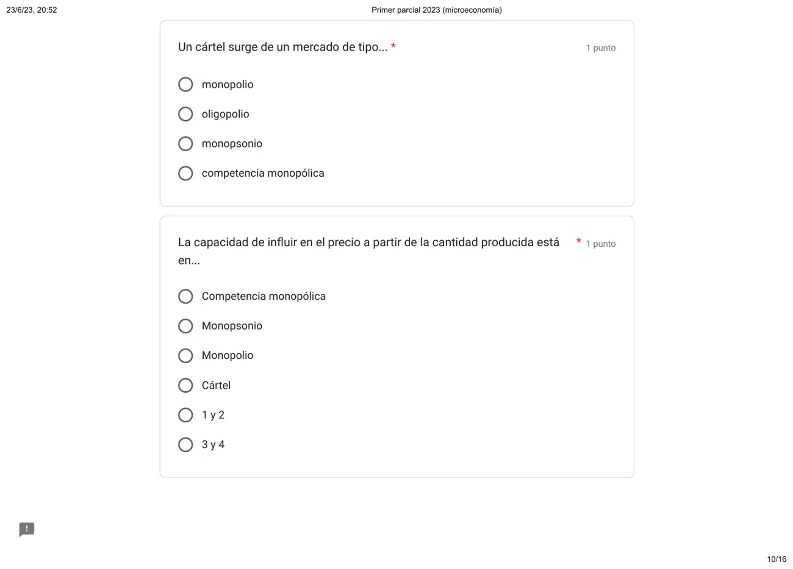

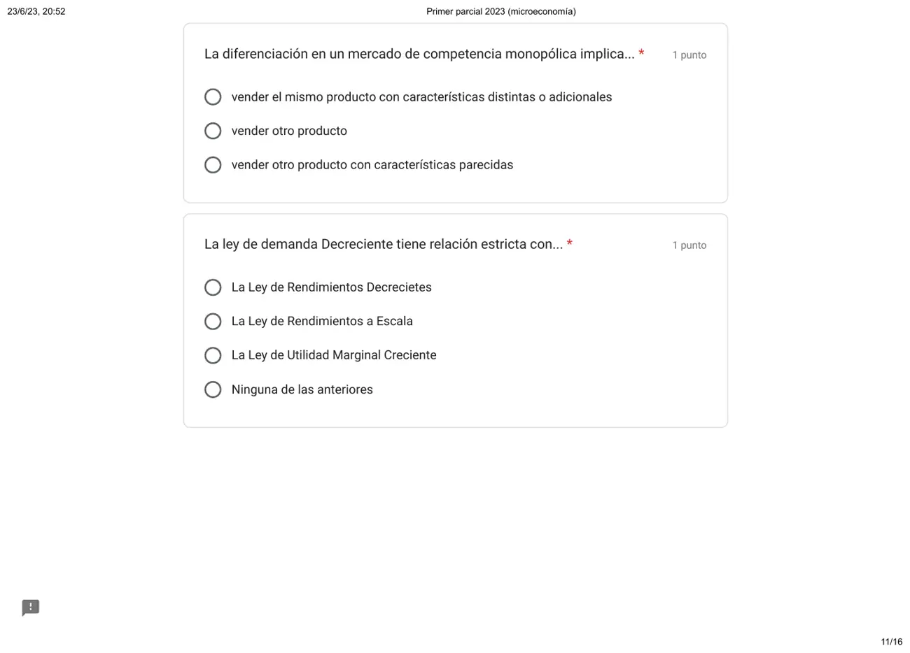

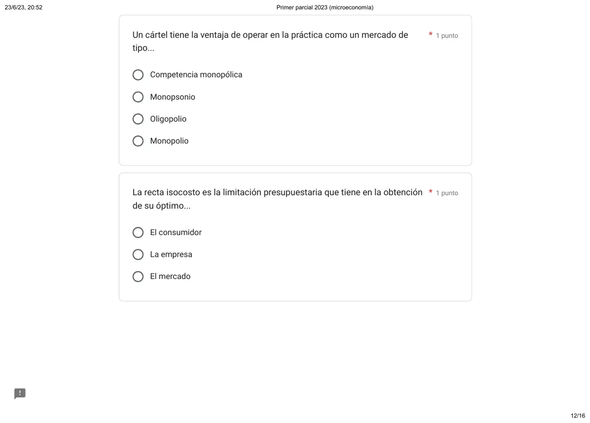

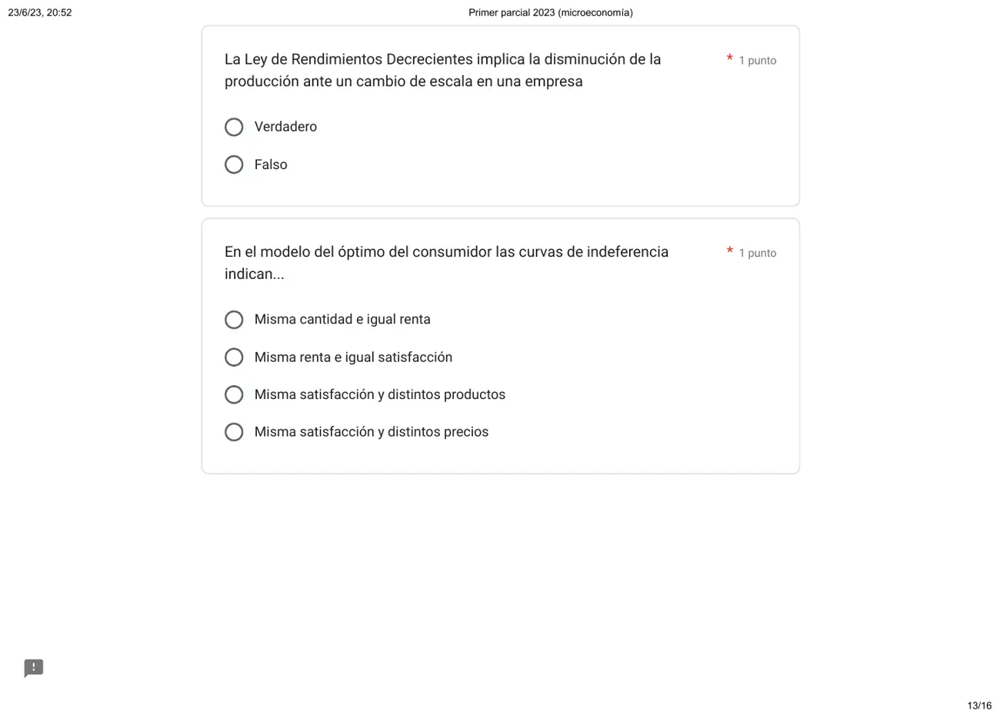

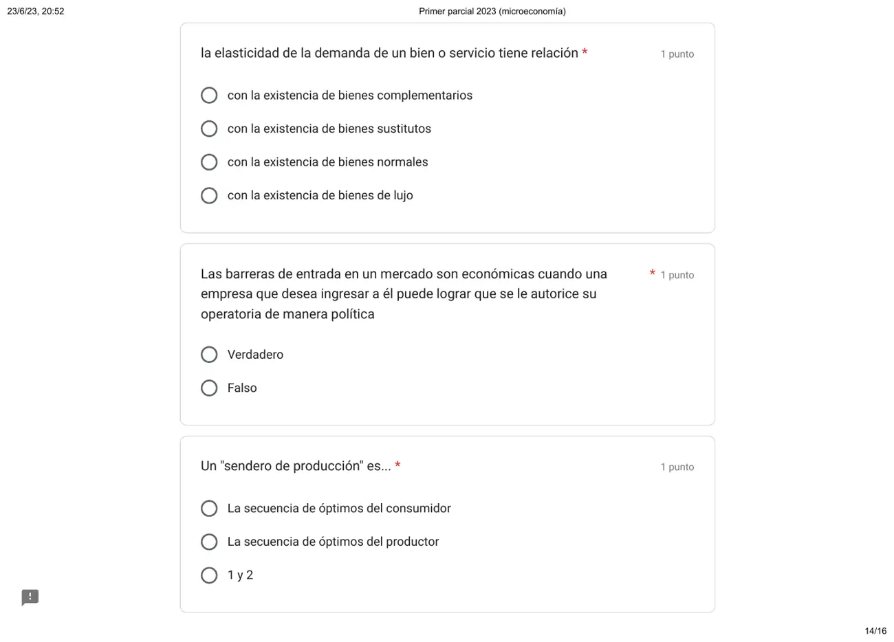
Propuesta de respuesta
Respuesta no verificada. La propuso Luta Studios con inteligencia artificial y ningún docente la revisó. Puede tener errores.
En el orden de la hoja. Cada respuesta dice de qué página del apunte sale. Donde dice «sin apunte» o «sin respuesta en el apunte», el compilado de la cátedra no lo contesta y va la opción más defendible.
- Un Rendimiento a Escala Decreciente puede estar sugiriendo obsolescencia de sus factores Fijos. Falso. Sin apunte de la cátedra. En un cambio de escala crecen todos los factores, así que no hay un factor fijo que explique el resultado. El factor fijo es lo que explica la ley de rendimientos decrecientes.
- La Ley de Rendimientos Decrecientes implica... La eficiencia en el uso del factor trabajo. Con el capital fijo, cada trabajador que se suma aporta menos producción que el anterior. La ley habla de cómo rinde el trabajo sobre ese capital. Fuente: Final 06/05/2016, solución de la cátedra, pág. 3 de la hoja.
- El Excedente del Consumidor del mercado es la zona donde se pueden... Comercializar productos a mayores precios. Si los consumidores valoran el bien por encima del precio, hay lugar para cobrarles más. En el ejemplo del apunte, la editorial ofrece un libro voluntario de 2 pesos y se queda con el excedente de quien pagaría el diario a 7. Fuente: compilado, pág. 16.
- Cuándo hablamos de cambios de escala, hablamos de... Mantener la eficiencia incrementando el nivel de producción. Sin apunte de la cátedra. Lo más cercano en el compilado es el sendero de producción, el camino de una empresa que aumenta la cantidad y respeta la proporción de factores de su función (pág. 20). Crecer con la misma proporción es crecer sin perder eficiencia.
- El Monopsonio es propio de la compra-venta de alimentos de manera minorista. Falso. El monopsonio tiene un solo comprador, y en la venta minorista de alimentos compran muchísimos consumidores. Fuente: compilado, págs. 42 a 45.
- Cuándo hablamos de «costo primo», hablamos de... Costos directos. En el cuadro del apunte, la mano de obra directa más la materia prima directa forman el costo primo. Fuente: compilado, pág. 28.
- Entre las diferenciaciones en un mercado de competencia monopólica están... Todas las anteriores. En competencia monopolística se compite en características del producto, y la atención, la calidad, la ubicación y el servicio posventa lo son. Ninguna opción junta solo la 3 y la 4, y «todas» es la única que las incluye. Fuente: compilado, págs. 43 a 45.
- El excedente del consumidor representa... 1 y 3. La primera es la definición del apunte, la utilidad que obtiene el consumidor por encima de lo que paga. La tercera mira lo mismo desde el mercado, lo que los consumidores pagarían por encima del precio. Con eso la editorial del ejemplo le vende un libro voluntario a quien tenía más excedente. La segunda es de la empresa. Fuente: compilado, págs. 13 y 16.
- Los consumidores al momento de elegir comprar un bien o servicio ejercen su... Voto monetario. Así llama el apunte a la decisión de los consumidores frente al precio de venta. Fuente: compilado, pág. 25.
- El mercado de factores es de vital importancia porque... Nutre a las empresas de elementos para producir. El individuo ofrece sus factores a cambio de una renta, y la empresa los combina con tecnología para elaborar su producto. Fuente: compilado, págs. 4 a 10.
- Que un país esté sobre su Frontera de Posibilidades de Producción es una posición de... Eficiencia. Sin apunte de la cátedra. Sobre la frontera se produce el máximo posible con los recursos que hay. Adentro quedan recursos sin usar, que es despilfarro.
- Los puntos en la curva de demanda representan... Los óptimos de los consumidores de ese mercado. Cada consumidor elige su óptimo, la cesta que más satisfacción le da con su renta y esos precios. Si cambia el precio, cambia el óptimo y con él la cantidad que compra. La curva junta esos puntos, uno por precio, y la del mercado suma las de todos. Fuente: compilado, págs. 15 y 32 a 34.
- Dos factores de producción que tradicionalmente no se encuentran en la bibliografía y que deben ser considerados son... Tecnología y capacidad empresaria. El apunte suma a los tres factores clásicos la capacidad empresaria, y define a la empresa como factores unidos por la tecnología. Ninguna opción junta biósfera con capacidad empresaria. Fuente: compilado, págs. 6 a 10.
- En el análisis de un mercado con libre competencia cuando se da un corrimiento de la curva de Oferta a la izquierda y de la misma manera la curva de Demanda, puede que estemos ante un mercado de productos obsoletos. Verdadero. Si el producto queda obsoleto, los consumidores lo dejan de elegir y la demanda se corre a la izquierda. Los productores dejan de fabricarlo y la oferta también se corre a la izquierda. Fuente: compilado, págs. 34 a 39.
- La Utilidad Marginal puede ser negativa desde la primera unidad en el caso de bienes o servicios... Denominados malos. Sin apunte de la cátedra. Es la única opción que se define por la satisfacción. Complementarios y sustitutos se definen por el precio de otro bien.
- La LUMD es descendente porque representa la evolución de... La satisfacción percibida. La utilidad marginal es la satisfacción de consumir una unidad más, y disminuye con cada unidad nueva. Fuente: compilado, pág. 11.
- Que se «vacíe el mercado» significa... Todas las anteriores. En el equilibrio se balancean oferta y demanda, todos actúan de manera racional y se consumen todos los bienes producidos. Las tres opciones salen de ese párrafo del apunte. Fuente: compilado, pág. 37.
- Una función producción es... La combinación de factores para la producción eficiente. La función producción muestra la cantidad máxima que se puede lograr con distintas combinaciones de factores, dadas las técnicas y la tecnología. Lograr el máximo es producir de forma eficiente. Fuente: compilado, pág. 19.
- Un costo indirecto requiere... La adjudicación de un porcentual a cada unidad producida. Con un costo indirecto, la pieza se identifica con una parte de la erogación. Hay que repartirlo entre las unidades. Fuente: compilado, pág. 24.
- Un cártel surge de un mercado de tipo... Oligopolio. El apunte presenta la colusión o cartel como un tipo especial de oligopolio. Fuente: compilado, pág. 44.
- La capacidad de influir en el precio a partir de la cantidad producida está en... 3 y 4. El monopolio es el único oferente, y el cartel acuerda precios y producción como un monopolio. Los dos fijan el precio con la cantidad que producen. En competencia monopolística hay muchos oferentes, y el monopsonio es un comprador. Fuente: compilado, págs. 42 a 45.
- La diferenciación en un mercado de competencia monopólica implica... Vender el mismo producto con características distintas o adicionales. Los oferentes venden un producto diferenciado y compiten en sus características. Fuente: compilado, págs. 44 y 45.
- La ley de demanda Decreciente tiene relación estricta con... Ninguna de las anteriores. La curva de demanda sale de la utilidad marginal decreciente. Como cada unidad extra satisface menos, se compra más solo si el precio baja. La opción dice «creciente», y las otras dos son leyes de la producción. Fuente: compilado, págs. 11 a 13 y 32.
- Un cártel tiene la ventaja de operar en la práctica como un mercado de tipo... Monopolio. Las empresas del cartel acuerdan precios y producción, y así forman un monopolio. Fuente: compilado, pág. 44.
- La recta isocosto es la limitación presupuestaria que tiene en la obtención de su óptimo... La empresa. El precio de los factores y el monto disponible le ponen a la empresa una restricción presupuestaria a su deseo productivo. Fuente: compilado, pág. 21.
- La Ley de Rendimientos Decrecientes implica la disminución de la producción ante un cambio de escala en una empresa. Falso. La ley de rendimientos decrecientes es con un factor fijo. Al sumar trabajo sobre el mismo equipamiento, cada unidad agrega menos producción que la anterior, y la producción no tiene por qué bajar. En un cambio de escala crecen todos los factores. Fuente: Final 06/05/2016, solución de la cátedra, pág. 3 de la hoja.
- En el modelo del óptimo del consumidor las curvas de indiferencia indican... Misma satisfacción y distintos productos. La curva une las cestas, combinaciones distintas de los dos bienes, que dan la misma satisfacción. Fuente: compilado, pág. 14.
- La elasticidad de la demanda de un bien o servicio tiene relación... Con la existencia de bienes sustitutos. Los fáciles de sustituir tienen demanda elástica, y los básicos con pocos sustitutos, inelástica. Fuente: compilado, págs. 39 y 40.
- Las barreras de entrada en un mercado son económicas cuando una empresa que desea ingresar a él puede lograr que se le autorice su operatoria de manera política. Falso. El apunte nombra como barreras de entrada las economías de escala, las restricciones legales, la diferenciación de productos y la publicidad. Una autorización por la vía política es una restricción legal, no económica. Fuente: compilado, pág. 43.
- Un «sendero de producción» es... La secuencia de óptimos del productor. Es el camino de una empresa que aumenta la cantidad y respeta la proporción de factores de su función, por ejemplo . Fuente: compilado, pág. 20.
Respuesta no verificada. Puede tener errores.
Se armó con el resumen del 1° parcial de esta materia, con las citas del compilado de la cátedra que trae cada sección, y la solución de la cátedra del Final 06/05/2016 para rendimientos decrecientes.
Quedó en duda: En la 1, los rendimientos a escala no están en el compilado y la cátedra podría darla por verdadera; en la 4, los cambios de escala no están en el compilado; en la 7, el apunte no lista estas diferenciaciones, y si la cátedra no cuenta el precio, ninguna opción cierra del todo; en la 8, si la cátedra toma solo la definición, la respuesta es la primera; en la 11, la Frontera de Posibilidades de Producción no está en el compilado. La página enlaza el resumen de un alumno; en la 12, el apunte dice «óptimo o equilibrio» como si fueran lo mismo, así que la cátedra podría pedir «los equilibrios». La página del 1° parcial avisa que el compilado no lo contesta en forma directa; en la 13, si la cátedra cuenta la biósfera como factor nuevo y no la tecnología, va «biósfera y tecnología». La página del 1° parcial no contesta esta consigna; en la 14, la página avisa que la respuesta no está escrita en el apunte, y sale de los desplazamientos; en la 15, el compilado no habla de bienes con utilidad marginal negativa, y la respuesta sale del sentido de las opciones; en la 17, la página del 1° parcial la contesta con la primera, que es la definición textual. Si la cátedra quiere una sola, es esa; en la 19, el apunte no habla de porcentajes, y sale de la definición; en la 29, el apunte nombra las barreras, pero no dice cuáles llama «económicas».
¿Cómo te fue?
Marcá cada tema del examen.
- ConsumidorExcedente del consumidor, en 1° parcial
- MercadosQué resuelve un mercado, en 1° parcial
- ProducciónDecisiones de producción, en 1° parcial
- CostosVisión de la administración: el proceso de acumulación de costos, en 1° parcial